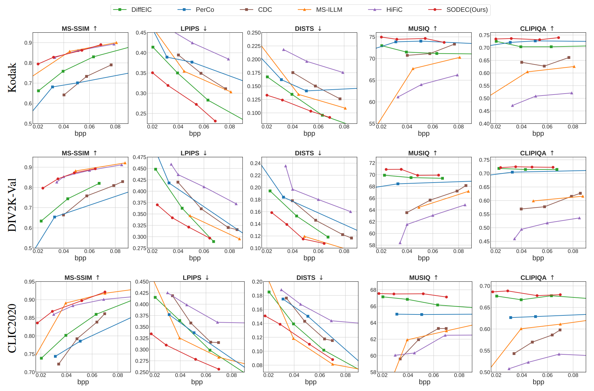
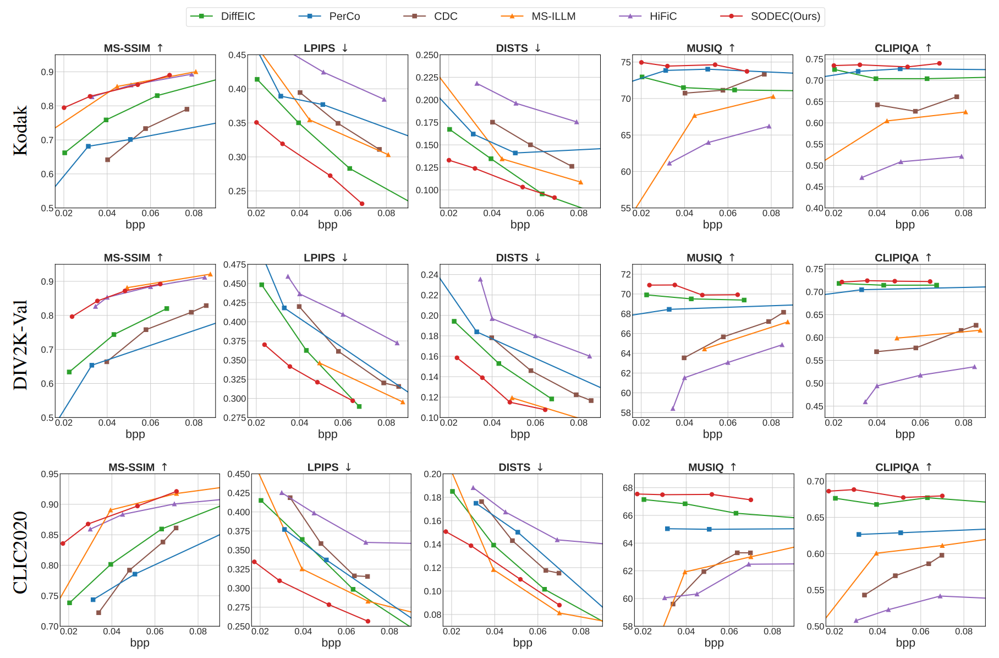
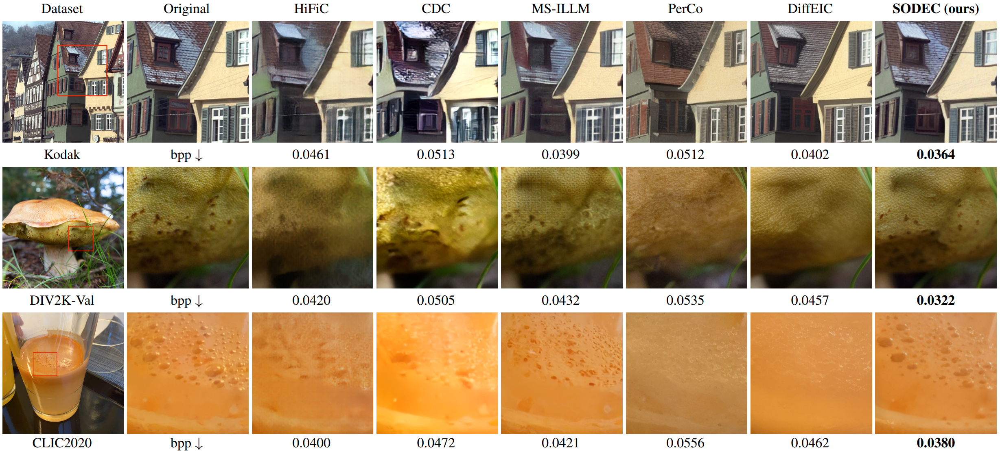
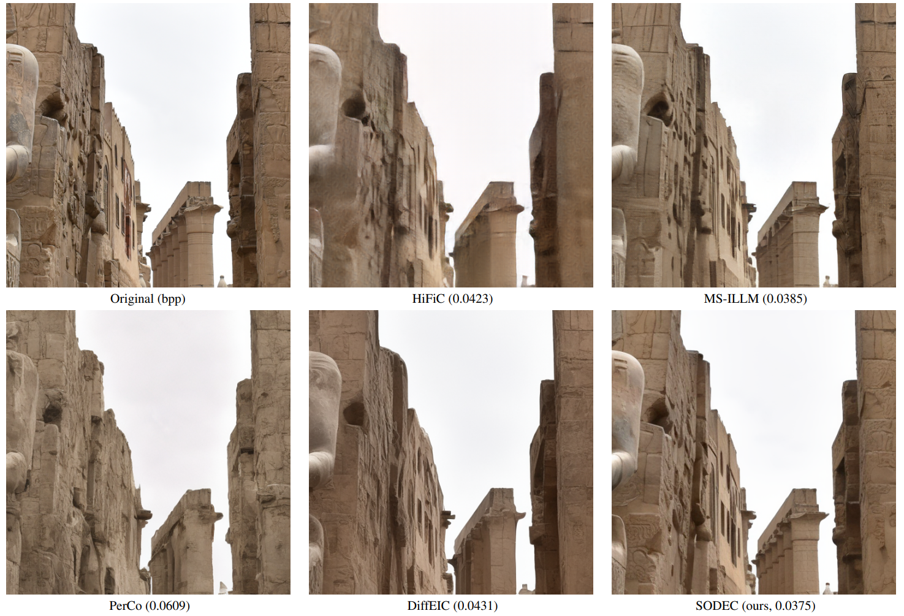
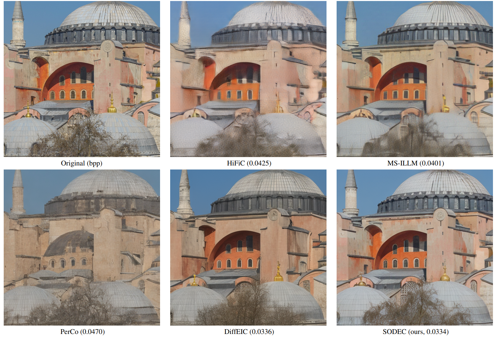
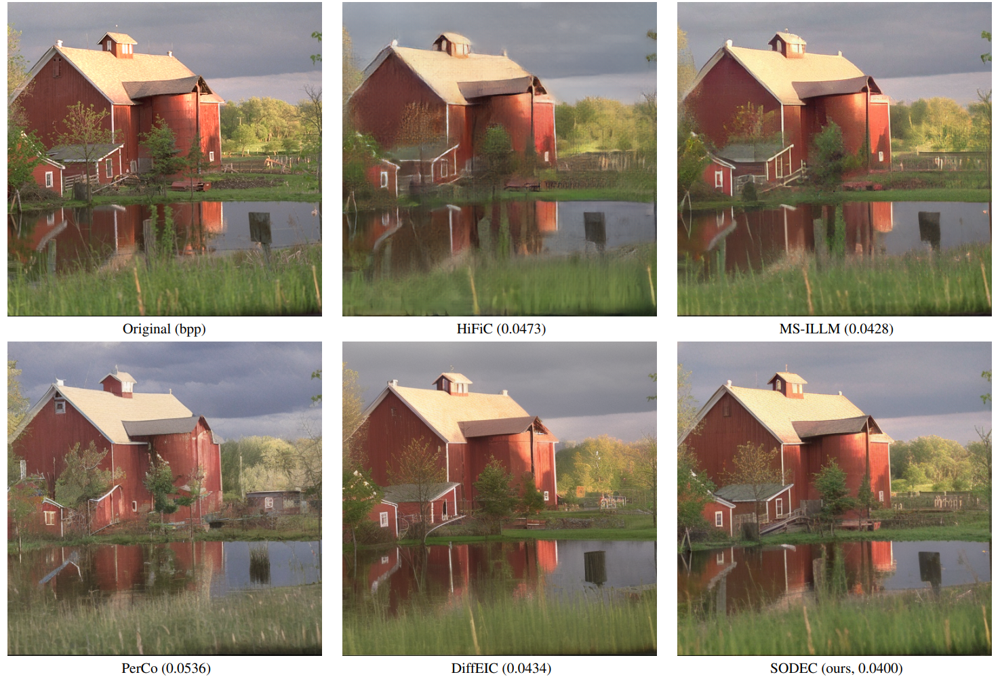
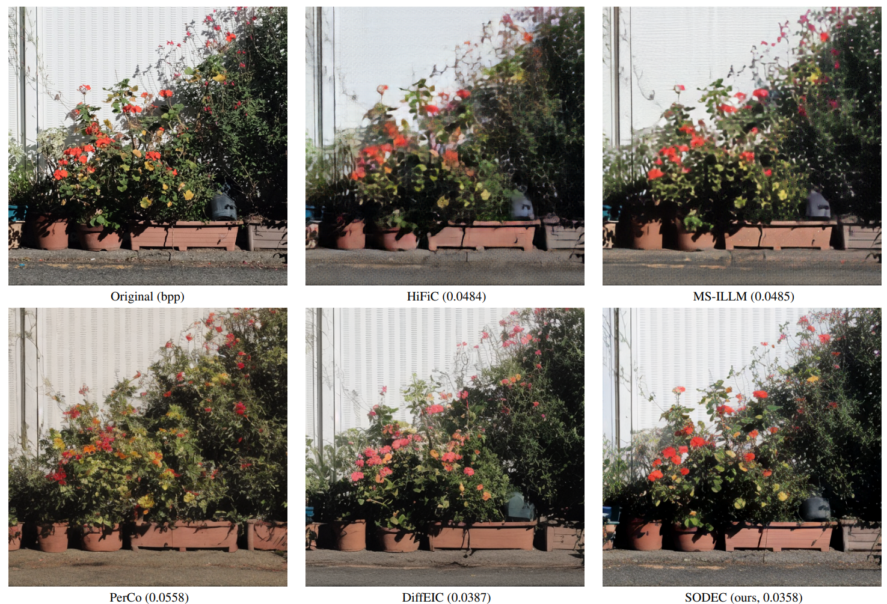
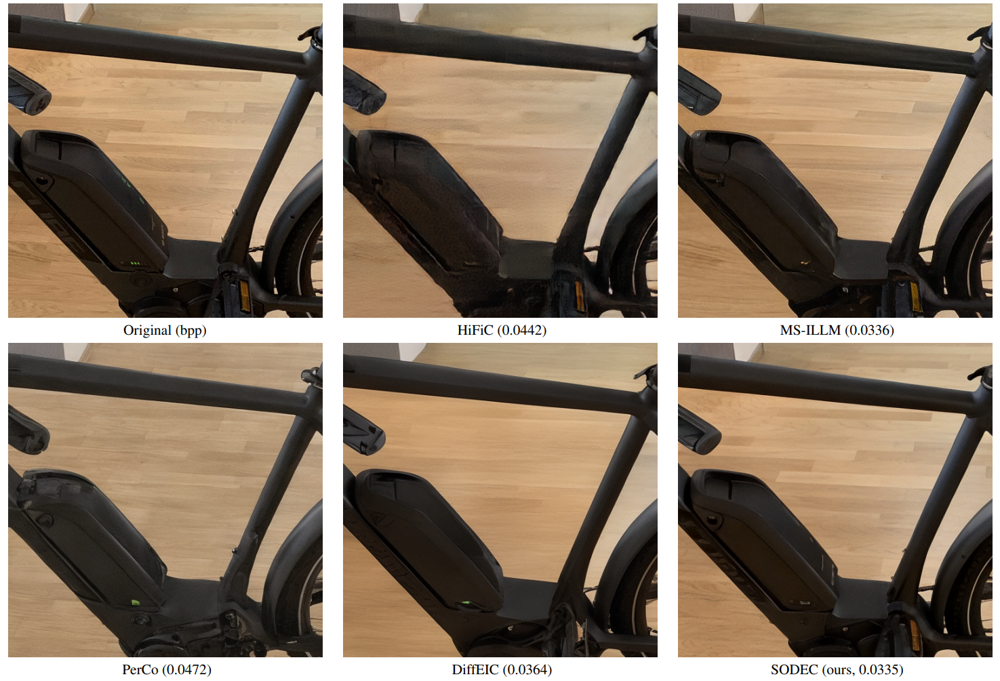

- Rate-Distortion-Perception Results (Fig. 4 of the main paper)

SODEC achieves superior rate-distortion-perception performance with single-step decoding. Compared to previous diffusion-based compression models, SODEC improves decoding speed by more than 20× while maintaining high fidelity and perceptual quality.
Diffusion-based image compression has demonstrated impressive perceptual performance. However, it suffers from two critical drawbacks: (1) excessive decoding latency due to multi-step sampling, and (2) poor fidelity resulting from over-reliance on generative priors. To address these issues, we propose SODEC, a novel single-step diffusion image compression model. We argue that in image compression, a sufficiently informative latent renders multi-step refinement unnecessary. Based on this insight, we leverage a pre-trained VAE-based model to produce latents with rich information, and replace the iterative denoising process with a single-step decoding. Meanwhile, to improve fidelity, we introduce the fidelity guidance module, encouraging outputs that are faithful to the original image. Furthermore, we design the rate annealing training strategy to enable effective training under extremely low bitrates. Extensive experiments show that SODEC significantly outperforms existing methods, achieving superior rate–distortion–perception performance. Moreover, compared to previous diffusion-based compression models, SODEC improves decoding speed by more than 20×.
SODEC consists of three key components: (1) Rich Information Encoder: Leverages pre-trained VAE to produce informative latents; (2) Single-Step Decoder: Replaces iterative denoising with one-step decoding; (3) Fidelity Guidance Module: Ensures outputs are faithful to the original image while maintaining perceptual quality.
SODEC achieves superior performance across multiple metrics:







@article{chen2025steering,
title={Steering One-Step Diffusion Model with Fidelity-Rich Decoder for Fast Image Compression},
author={Chen, Zheng and Zhou, Mingde and Guo, Jinpei and Yuan, Jiale and Ji, Yifei and Zhang, Yulun},
journal={arXiv preprint arXiv:2508.04979},
year={2025}
}